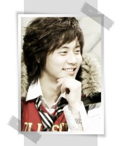

让《情书》闪闪发亮的他们——情侣To…
（ps：最近在看《爆裂精神统一》、《夜心万万》等韩国综艺的同时，禁不住某人的“软磨硬泡”，又陪她开始重温《情书》，突然发觉到其实它已经结束播出快一年了，不过，在我的心里《情书》始终是no.1！写下这篇继续怀念~）
[注]纯粹个人意见，有不同想法的亲请不要介意~
NO.1
“男才女貌”篇
junjin &
韩佳仁（第一季）
相信看过那期《情书》的观众，都真心希望小白能和韩佳仁真正成为一对，只是可惜，不久后，韩佳仁就嫁给延政勋了 ~
~
~tim &
亚由美（第三季）
情歌贵公子和无厘头美女只在第三季中成过一次情侣，不过，只是这一次，就让我们发觉到两人的相配指数好高啊（尤其是在蹦极环节的表现）。
NO.2
“舞动奇迹”篇
张佑赫 &
全慧彬（第二季）
其实可以称为舞动奇迹的情侣组合很多，不过，相信带给我们最多期待的应该还是“不落的太阳”张佑赫与情书中的dancing
queen全慧彬这对情侣吧？！
NO.3
“野百合也有春天”篇
brian &
张英兰（第二季）

对神话痴心一片的英兰姐姐，终于也迎来了自己的春天，可爱的brian看到了英兰姐姐对他的专一，跌破眼镜地拒绝了三心二意的性感美女蔡妍，选择了英兰姐姐成为情侣，让我们为英兰姐姐迟到的春天撒花……
NO.4
“最受争议”篇
junjin &
李秀景（第二季）
很多喜欢junjin的观众，都对这一对情侣的诞生意见多多，虽然只是游戏，但还是难以接受。junjin对李秀景是足够“痴情”，可李mm就太让人捉摸不到了，有一期竟然还接受了申政焕的花，实在是……
NO.5“笑果百倍”篇
金钟民 &
黄静音（第二季）
“空空”情侣带给我们的欢笑，是绝对不能忘的啊！
韩庚 &
亚由美（第三季）
这两个外国人（非韩国人）可爱的亚由美和我们可爱的韩庚，在“我的爱背背看”环节竟然“勇敢”地走到了一起，，对韩语的并不精通的他们，带给了我们更多的笑~
NO.6“出乎意料”篇
金桢恩 &
申彗星（第一季）
这个奖绝对应该颁给这一对，尤其当我们都以为金桢恩会毫无悬念地选择大大时，毕竟节目中金桢恩与大大的火花是最多的，不过金桢恩最后的说辞倒也缓解了些我们的困惑~
NO.7“新鲜搭配”篇
崔始源 & 尹晓英（第二季）
被称为sj封面模特的帅气男孩和sbs的播音员，这个情侣搭配，无需多说就已经很特别了~
NO.8“经典”姐弟恋篇
tim &
裕利（第三季）
不用多说，第三季《情书》中最亮眼的就莫过于这对姐弟情侣了，热情的裕利姐姐和绅士的tim，不过很佩服裕利姐姐的心理承受能力，竟然可以管比自己小的tim叫“oppa”！
韩庚 &
裕利（第三季）
裕利姐姐的魅力我们都了解，她对韩庚的照顾我们也都看在了眼里。
NO.9“可爱无罪”篇
Andy &
秋素英（第二季）
提到“可爱”，andy绝对入选，再加上酒窝美女秋素英，只一个字“赞”！
NO.10
羞涩篇
金基范 &
soojin（第二季）
说起羞涩，这一对绝对入选，连加油都能红了脸的金基范，连带着让soojin也变得越来越不好意思起来~